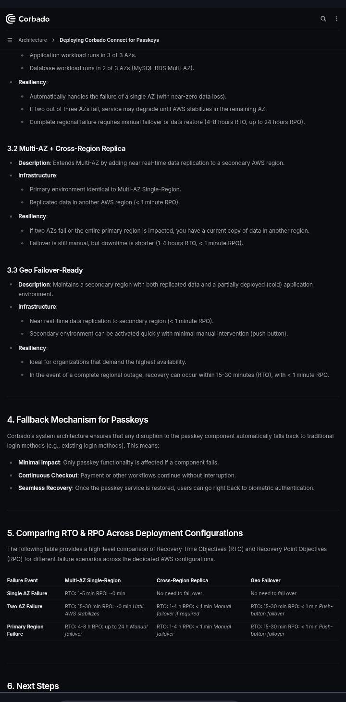

Finding: Cross-region replication does not mean regional failover is ready.
Corbado presents Multi-AZ + Cross-Region Replica as a deployment configuration with near-real-time replication to another AWS region and an RPO of less than one minute. However, the same configuration requires manual failover and has a documented 1–4 hour RTO. Corbado's Geo Failover-Ready configuration is materially different: it maintains a partially deployed secondary application environment that can be activated with minimal manual intervention, with a documented 15–30 minute RTO. The documentation therefore distinguishes between having current replicated data and having an application environment ready to take over, but that distinction can be easy to miss when evaluating disaster recovery primarily through RPO.
A team evaluating disaster-recovery options may focus on the <1 minute RPO and the existence of a secondary regional copy when determining whether Cross-Region Replica satisfies its availability requirements. The risk is not that the documentation explicitly promises automatic recovery. The risk is that RPO communicates potential data loss, while RTO communicates service restoration time—and the two represent very different operational guarantees.

The deployment documentation shows:
Cross-Region Replica
<1 minute RPO
Manual failover
1–4 hour RTO
while Geo Failover-Ready provides:
A partially deployed secondary application environment
Push-button/minimal-intervention activation
15–30 minute RTO
The same page therefore provides direct evidence that replication and failover readiness are separate capabilities.
The primary region experiences a complete regional failure. The team has current data in another region, but Corbado documents that the Cross-Region Replica configuration still requires manual failover, with a 1–4 hour RTO.
The organization can have a nearly current copy of its data while the application itself remains unavailable.
In other words:
Low RPO ≠ fast recovery.
For an authentication component, that distinction matters because dependent applications may remain unable to authenticate users until the application environment is restored and failover is completed.
Make Manual failover prominent wherever Cross-Region Replica is presented.
Put RPO and RTO side by side in the configuration-selection flow.
Explicitly explain that Cross-Region Replica provides replicated data but not a ready-to-activate secondary application environment.
Add a decision rule explaining when Geo Failover-Ready is required.
Explain the operational difference between data replication and application failover readiness.
A team can satisfy its data-loss requirement while failing to satisfy its service-restoration requirement. For authentication infrastructure, discovering that distinction during a regional outage can mean a significantly longer service interruption than the team expected, affecting every application that depends on the authentication service.
This finding does not claim that Corbado's Cross-Region Replica configuration is defective. The documented behavior is explicit. The finding is that a low RPO can be mistaken for a strong recovery posture if the operational distinction between replicated data and application failover readiness is not made prominent enough during configuration selection.
An extended auth outage is severe — every dependent app loses authentication for up to 4 hours. But this only manifests if two things both happen: a team picks Cross-Region Replica specifically, and a full regional failure occurs — a genuinely rare trigger event. High impact, low likelihood of actually firing.